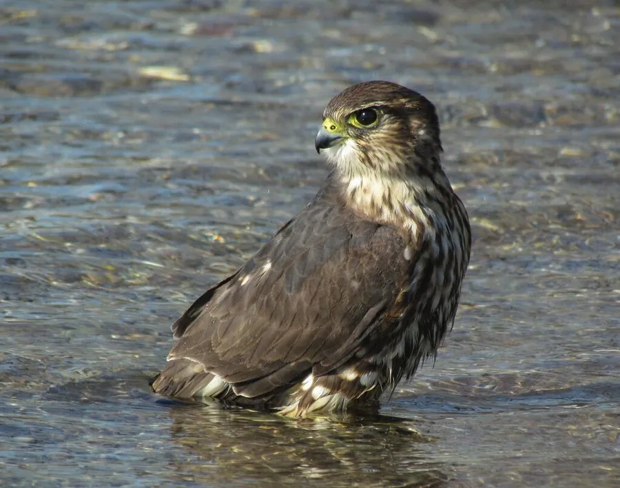

鸟类 · 动物界
灰背隼 Falco columbarius

体型仅比鸽子稍大的小型隼类，雄鸟蓝灰、雌鸟褐色，均具横斑。以低空快速追击小型鸟类著称，是北半球苔原与草原的敏捷猎手。
- 分类
- 门脊索动物门纲鸟纲目隼形目科隼科属隼属
- 栖息环境
- 繁殖于苔原、荒原、沼泽与开阔林地；越冬于农田、草原、盐碱地、海滩与河口。
- 地理分布
- 环北极及北半球温带繁殖；越冬于欧洲南部、北非、亚洲南部及中国北方至长江流域。
- 保护级别
- IUCN 红色名录列为无危（LC）；中国国家二级保护野生动物，列入 CITES 附录二。
物种志
灰背隼体长约二十四至三十三厘米，翼展五十至七十三厘米，体重一百二十五至三百克，雌鸟明显大于雄鸟。雄鸟上体蓝灰色，下体淡橙至乳白并具褐色纵纹，尾羽具宽阔黑带；雌鸟上体暗褐，下体乳白密布褐色横斑。头部有浅色眉纹和深色髭纹，虹膜暗褐，嘴灰黑，脚黄色。
它繁殖于北半球高纬度的苔原、荒原与开阔林地，在地面凹坑、岩隙或旧鸦巢中产卵三至五枚。捕猎时多贴地低空飞行，利用地形掩护突然加速追击云雀、鹨、麻雀等小型鸟类，也捕食蜻蜓与鼠类。秋季南迁至温带和亚热带，越冬于中国北方至长江流域的开阔农田、草原与沿海湿地。灰背隼虽小却极为勇猛，甚至能驱赶体型更大的猛禽。
形态与习性
- 体长24–33 厘米，雌鸟较大
- 翼展50–73 厘米
- 体重125–300 克
- 食性小型鸟类为主，兼食昆虫与鼠类
- 繁殖地面凹坑或旧巢产卵，每窝 3–5 枚
- 保护级别国家二级；CITES 附录二
趣味知识
- 捕猎多在低空水平追击，很少像游隼那样高空俯冲。
- 雌鸟体型明显大于雄鸟，可猎取更大的鸟。
- 在北美被称为 Merlin，是城市越冬的常客。